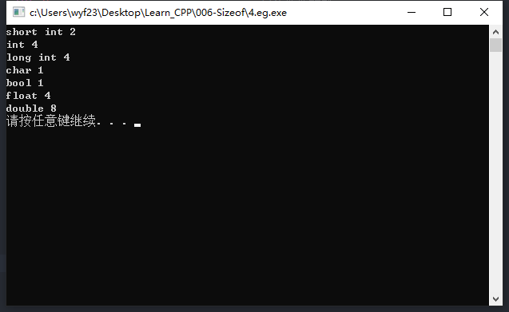

检查不同累的的数据在内存中占的字节数
【实例名称】
编写程序，显示整型、长整型、字符型、逻辑性、浮点型、和双精度浮点型数据的类型名称和所占字节数。
【问题分析】
sizeof()，它计算括号中的类型、变量或表达式结果占的字节数。
【运行结果】
- short int 2
- int 4
- longint 4
- char 1
- bool 1
- float 4
- double 8
【算法描述】
检查不同类型的数据在内存中占的字节数
- ① 输出字符串’int’；
- ② 用sizeof(int)计算整型数占的字节数n；
- ③ 输出n；
【示例代码】
1
2
3
4
5
6
7
8
9
10
11
12
13
14
15
16
17
18
19
20
21
22
| #include <iostream>
using namespace std;
int main()
{
int n;
n = sizeof(short int);
cout << "short int " << n << endl;
n = sizeof(int);
cout << "int " << n << endl;
n = sizeof(long int);
cout << "long int " << n << endl;
n = sizeof(char);
cout << "char " << n << endl;
n = sizeof(bool);
cout << "bool " << n << endl;
n = sizeof(float);
cout << "float " << n << endl;
n = sizeof(double);
cout << "double " << n << endl;
system("pause");
return 0;
}
|
【运行结果】

【总结】
- 本例程序中定义的变量n是不必要的，可以将sizeof()放在cout中的n的位置；
- sizeof用法很像函数，但是C++中却称它是运算符；
- 可以将题中sizeof括号中的数据类型名换位常量、变量和表达式；